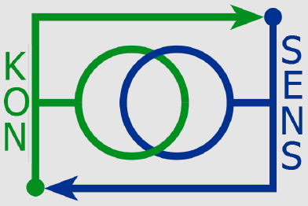
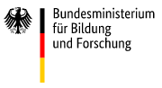
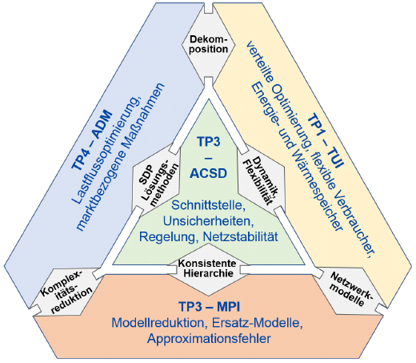

|  | KONSENS: Konsistente Optimierung und Stabilisierung |
|  |
| [Researchers] [Project Description] [Publications] [Press] [Meetings] |
| Duration: | February 2018 - February 2021 |
| Project leaders: | Prof. Dr. Christoph Helmberg (Project Coordinator) |
| Algorithmische und Diskrete Mathematik, Technische Universität Chemnitz, Straße der Nationen 62, 09107 Chemnitz | |
| helmbergATmathematik.tu-chemnitz.de |
|
| Volker Mehrmann | |
| Department of Mathematics, Technical University of Berlin, Strasse des 17. Juni 136, 10623 Berlin, Germany | |
| Tel: +49 (0)30 - 314 25736 (office) / - 314 21264
(secretary) |
|
| Volker Mehrmann | |
| Department of Mathematics, Technical University of Berlin, Strasse des 17. Juni 136, 10623 Berlin, Germany | |
| Tel: +49 (0)30 - 314 25736 (office) / - 314 21264
(secretary) |
|
| Michael Schäfer | |
| Institute of Numerical Methods in Mechanical Engineering, Technical University Darmstadt, Dolivostrasse 15, 64239 Darmstadt, Germany | |
| Tel: +49 (0) 6151 16-2877 |
|
| Researchers: | Dr. Manuel Baumann |
| Department of Mathematics, Technical University of Berlin | |
| Tel: +49 (0)30 - 314 23439 | |
|
Stephanie Nachtigall, neé Hermann |
|
| Chair of Chemical and Process Engineering, Technical University of Berlin | |
| Tel: +49 (0)30 - 314 72731 | |
|
Astrid Walle |
|
| FNB, TU Darmstadt | |
| Tel: +49 (0)6151/16-3178 | |
| Industry partners: | TenneT TSO GmbH · ENSO NETZ GmbH · Venios GmbH · Energy Saxony e. V. |
| Support: | Bundesministerium für Bildung und Forschung - "Mathematik für Innovationen" als Beitrag zur Energiewende |
| top |
| Description: |
|  This project is dedicated to the control of drop size distributions in stirred liquid/liquid dispersions. Dispersed systems are of major importance in chemical, pharmaceutical, mining, petroleum, and food industries. The design of reactors requires usually expensive experimental investigations. Mathematical modelling, model based simulation and control are often the only feasible approach to achieve the technological goals. For the complex process of formation of drop size distributions (DSD) in a stirred tank such mathematical methods are currently not available. The global long-term perspective of the project is to develop model based methods for the prediction of the complex process of DSD formation in stirred liquid/liquid dispersions in a stirred tank. The technological vision is to be able to achieve a desired average drop size and a defined size distribution, using control parameters such as the stirrer speed. To achieve the long-term goals, the research project consists of several major subtasks which will be carried out in a cooperative way between the three partners of the project. These subtasks can be summarized as experiment-based modelling, development, implementation, and application of numerical methods, construction of real-time observers, and development of a robust control method.
|
| top |
| Publication: |
The goal of this project is the control of drop size distributions both in the simulation and in the numerical investigation. So far, we have obtained the following results:
|
| top |
| Press Releases: |
|
| Project meetings |
The industrial and academic partners have regular project meetings at alternating hosts.
|
Page created and maintained by Manuel Baumann, last updated: May 2018 |